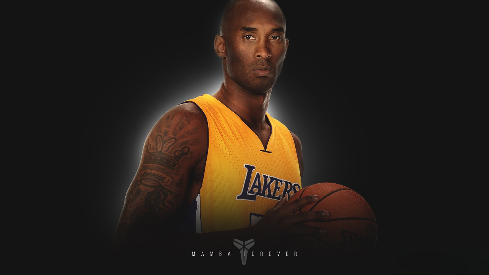

What "Mamba Mentality" Meant in His Own Words
The 'Mamba mentality' is all about focusing on the process and trusting in the hard work when it matters most," Bryant said in an interview with Amazon Book Review in 2018. “It's the ultimate mantra for the competitive spirit. It started just as a hashtag that came to me one day, and it's grown into something athletes — and even non-athletes -- embrace as a mindset.
